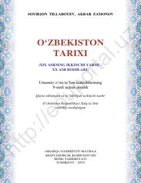

OT9-sinf uchun O‘zbekiston tarixi fanidan o‘quv darsligi.
Ushbu darslik umumiy o‘rta ta’lim maktablarining 9-sinf o‘quvchilari uchun mo‘ljallangan bo‘lib, XIX asrning ikkinchi yarmi va XX asr boshlaridagi O‘zbekiston tarixini qamrab oladi. Kitobda Rossiya imperiyasi istilosi, Turkiston general-gubernatorligining tashkil etilishi, mustamlakachilik siyosati hamda milliy ozodlik harakatlari va jadidchilik g‘oyalari batafsil yoritilgan.